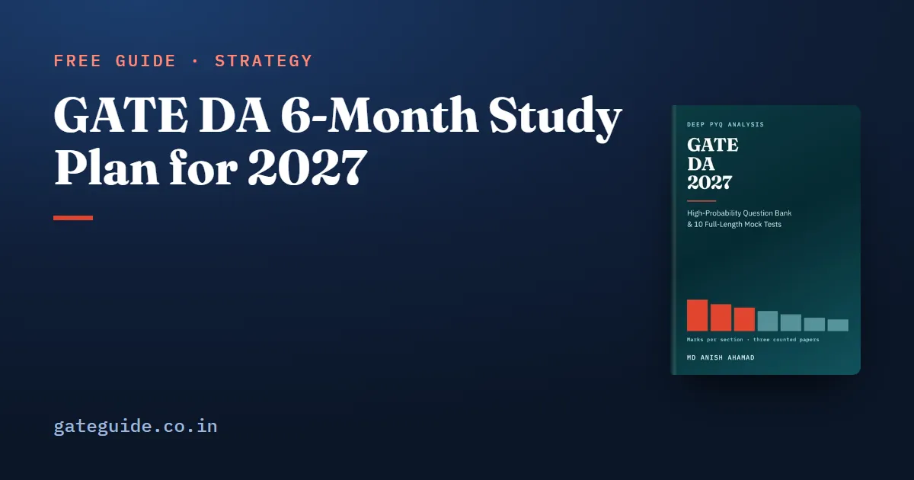

GATE DA 6-Month Study Plan for 2027

Six months is enough to cover the whole GATE DA syllabus once, properly, and still leave time for the three real papers and a run of mocks. This guide lays out a month-by-month calendar built on the counted marks of the 2024, 2025 and 2026 papers. Its aim is full coverage, not a cut-off: every section and General Aptitude get a real first pass.
In this guide
Key takeaways
- Months 1 to 4 are the first pass: sixteen weeks across seven technical sections, split by counted marks.
- Linear Algebra comes early, before Machine Learning, because PCA and regression depend on it.
- General Aptitude gets an hour every week from week 1; Python tracing gets twenty minutes every day.
- Month 5 opens with a week on the named topics no paper has set, then the 2025 and 2026 papers.
- Month 6 is mocks with analysis, and no new topics in the last fortnight.
- GATE 2027 runs 6 to 21 February 2027. A full six-month plan starts around August 2026.
The terms the plan uses
A first pass is the first proper study of a section: theory, worked examples and practice questions on each topic group. An always-asked group is a topic group that drew marks in all three counted papers. A timed paper is a full 65-question, three-hour sitting under exam rules.
The weights come from the GATE DA 2027 book, which counted every question of the three DA papers against the official keys.
Sharing sixteen weeks by marks
The first pass has sixteen weeks. Give each section a share in proportion to its mean marks out of 85.
Worked example: the week split
For Probability and Statistics, with a mean of 18.3:
Doing the same for every section and rounding to whole weeks gives:
| Section | Mean marks | Exact share | Weeks |
|---|---|---|---|
| Probability and Statistics | 18.3 | 3.4 | 3 |
| Programming, Data Structures and Algorithms | 16.0 | 3.0 | 3 |
| Machine Learning | 13.7 | 2.6 | 3 |
| Database Management and Warehousing | 12.0 | 2.3 | 2 |
| Linear Algebra | 10.0 | 1.9 | 2 |
| Section 7: search, logic, uncertainty | 8.0 | 1.5 | 2 |
| Calculus and Optimization | 7.0 | 1.3 | 1 |
| Total | 85 | 16 | 16 |
The rounded weeks add back to 16. General Aptitude runs alongside, not in this table.
Remember: Weeks follow marks, but order follows dependency. Linear Algebra is short, yet it comes second.
Month by month
Month 1 (weeks 1 to 4): Probability, then Linear Algebra begins
Weeks 1 to 3 cover Probability and Statistics, always-asked groups first: continuous random variables and the exponential, the named distributions, counting, Bayes' theorem. Then expectation by conditioning, the binomial and the central limit theorem. Week 4 starts Linear Algebra with eigenvalues and the special matrices.
At the end of week 2, sit the 2024 paper timed. You will not know much yet. The point is to see the shapes of the questions.
Month 2 (weeks 5 to 8): Linear Algebra, then Programming
Week 5 finishes Linear Algebra: subspaces, systems by echelon form, quadratic forms and the SVD. Weeks 6 to 8 are Programming: Python semantics and traces, graph traversals, the three basic sorts with exact counts, binary search, and the data structures. Code tracing carried 18 of the section's 48 counted marks, so trace on paper, every day.
Month 3 (weeks 9 to 12): Machine Learning, then Database begins
Weeks 9 to 11 cover Machine Learning. Start with the three always-asked groups: classification problems, neural networks, hierarchical clustering. Then one standard calculation for every other named method. Week 12 starts Database with relational algebra and SQL, evaluated on small tables by hand.
Trap: Machine Learning is the widest section in the syllabus and its marks are spread thin. Breadth beats depth here; do not spend all three weeks on two methods.
Month 4 (weeks 13 to 16): Database, Section 7, Calculus
Week 13 finishes Database: attribute closure, normal forms, B+ tree arithmetic, warehouse cuboids and OLAP terms. Weeks 14 and 15 cover search and logic: trace BFS, DFS and A*, practise minimax and alpha-beta, and settle logic by truth tables. Then reasoning under uncertainty. Week 16 covers Calculus: maxima and minima with endpoints, limits, continuity and Taylor series.
Month 5 (weeks 17 to 21): the gaps, then the real papers
Week 17 is for the named topics no paper has set: confidence intervals and the z, t and chi-squared tests, LU decomposition, linked lists, mergesort, multiple linear regression, k-fold cross-validation and the data transformations. Past papers will never bring you to them.
Weeks 18 and 19: sit the 2025 and 2026 papers as full timed papers, one a week. Spend the rest of each week going through every question against your notes. Weeks 20 and 21: a second pass on your two weakest sections, and your first mock.
Month 6 (weeks 22 to 26): mocks and the last fortnight
Sit a mock every four or five days, and follow each with an evening of diagnosis. Compare section scores across papers, never totals. In the last fortnight, learn nothing new except a half-day revisit of the week 17 topics. In the last week, revise formulas and your error log, and sit one paper to keep the three-hour rhythm.
The weekly rhythm inside each month
| Day | Work |
|---|---|
| 1 to 4 | One new topic a day, heaviest first; twenty minutes of code tracing |
| 5 | Practice questions on the four topics just covered |
| 6 | One hour of General Aptitude; last week's mistakes re-attempted |
| 7 | A timed mixed set, or rest |
Classify every lost mark: misread, wrong formula, slip, or not known. Only the last needs more reading.
In one line: Four months to learn everything once, one month for gaps and real papers, one month for mocks.
Supporting guides
The General Aptitude preparation guide covers the 15 marks that never varied. The marking scheme guide, common to every GATE paper, explains MCQ, MSQ and NAT marking for your mocks. Practise numericals with the virtual calculator guide, and confirm dates on the exam dates guide.
This guide gives the calendar. The GATE DA 2027 book gives the topic table for every week's section, practice questions on every group, and ten full mocks for month six.
Quick revision
- Sixteen first-pass weeks: 3, 3, 3, 2, 2, 2, 1 by marks.
- Order: Probability, Linear Algebra, Programming, Machine Learning, Database, Section 7, Calculus.
- 2024 paper in week 2 as a map; 2025 and 2026 timed in weeks 18 and 19.
- Week 17 for the named topics no paper has set.
- General Aptitude weekly; Python tracing daily.
- Month 6: mocks every four or five days, analysed by section.
- No new topics in the last fortnight.
Frequently asked questions
Is 6 months enough for GATE DA preparation?
Six months is enough for one full first pass through all seven sections and General Aptitude, a dedicated week on the never-asked named topics, the three real papers and several timed mocks. It leaves little room for a second full pass, so the plan revises from an error log rather than rereading everything.
How should I divide 6 months across GATE DA subjects?
Roughly in proportion to the counted marks. This plan gives sixteen weeks of first-pass study split 3, 3, 3, 2, 2, 2 and 1 across Probability, Programming, Machine Learning, Database, Linear Algebra, the search and logic section and Calculus, with Linear Algebra moved up before Machine Learning.
When should I start mocks in a 6-month GATE DA plan?
In month five, once every section has had a first pass. The 2024 paper is sat much earlier, in month one, only as a map of question shapes. The 2025 and 2026 papers are held back and sat as full timed papers in month five, then mocks follow with an evening of analysis after each.
What if fewer than 6 months are left before GATE DA 2027?
Keep the order and compress the months. GATE 2027 runs from 6 to 21 February 2027, so a full six-month plan needed to start around August 2026. With less time, shorten each first-pass block and protect three things - General Aptitude, the always-asked topics and at least two timed papers.
Sources
- GATE 2027 official website (IIT Madras)
- GATE 2027 DA syllabus PDF (IIT Madras)
- GATE 2024 DA question paper (IISc Bengaluru)
Dates, fees and the syllabus are set by the GATE 2027 organising institute and can change. Always confirm at gate2027.iitm.ac.in.